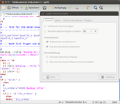
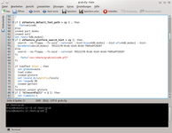
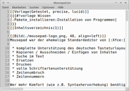
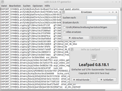
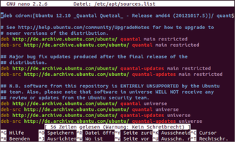
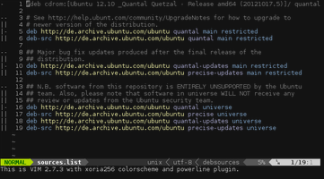

Editor
Zum Verständnis dieses Artikels sind folgende Seiten hilfreich:
 Ein Editor ist ein Programm, mit dem man beliebige Textdateien erstellen oder bearbeiten kann. Da unter Linux quasi alle Konfigurationsdateien als Textdateien vorliegen, könnte man mit einem Editor daher das komplette System konfigurieren.
Ein Editor ist ein Programm, mit dem man beliebige Textdateien erstellen oder bearbeiten kann. Da unter Linux quasi alle Konfigurationsdateien als Textdateien vorliegen, könnte man mit einem Editor daher das komplette System konfigurieren.
Unter Linux gibt es sehr viele verschiedene Editoren. Hier werden die Standardeditoren für Unity, GNOME, KDE, Xfce, LXDE und für die Kommandozeile kurz vorgestellt.
Bearbeiten von Systemdateien¶
Dateien in Systemordnern wie /usr, oder /etc können mit den Zugangsrechten eines normal angemeldeten Benutzers nicht direkt bearbeitet werden. Diese Einschränkung ist ein essentieller Baustein der Rechtverwaltung und des Sicherheitskonzepts von Linux. Möchte man Dateien in einem Systemordner ändern, so muss der Editor in mit entsprechenden Rechten gestartet werden. Dies ist zum Beispiel mit dem Werkzeug Sudo in einem Terminalfenster möglich [1].
| Desktop-Umgebung | |||||
| Unity/GNOME 3 | KDE | Xfce | LXDE | MATE | |
| Befehl | gksudo gedit | kdesudo kate | gksudo mousepad | gksudo leafpad | gksudo pluma |
Hinweis:
Für das Programm gksudo muss ab Ubuntu 13.10 zuerst das Paket gksu installiert werden.
In der Praxis kombiniert man den Befehl mit dem gewünschten Dateinamen. Beispiel:
gksudo EDITOR /PFAD/ZUR/DATEI
Dies ist nur ein kurzer Hinweis zu Benutzerrechten. Einsteiger sollten sich zuerst in die Grundlagen von sudo und Dateirechten einlesen.
|  |
| Gedit |
|  |
| Kate |
|  |
| Mousepad |
|  |
| Leafpad |
Unity/GNOME 3¶
Der Standardeditor für die Unity und GNOME-Desktopumgebung ist gedit. Unter Unity lässt dieser sich über die Eingabe von gedit im Unity-Menü (Dash) öffnen. Bei Ubuntu-Varianten mit einem Anwendungsmenü erfolgt der Start über "Zubehör -> Texteditor". Weitere Informationen sind im Artikel gedit zu finden.
KDE¶
Unter KDE heißt der Standardeditor kate und befindet sich im K-Menü unter "Dienstprogramme -> Kate (Erweiterter Texteditor)". Weitere Informationen sind im Artikel Kate zu finden.
MATE¶
Die Desktop-Umgebung MATE nutzt eine frühere Version von gedit mit dem Namen Pluma. Die Anwendung kann über "Zubehör -> Pluma" gestartet werden. Ansonsten verhalten sich die beiden Programme nahezu identisch.
Xfce¶
Unter Xfce heißt der Standardeditor mousepad und befindet sich im Menü unter "Zubehör -> Mousepad". Weitere Informationen sind im Artikel Mousepad zu finden.
Hinweis:
Bis Xubuntu 12.10 wurde Leafpad verwendet, der Standardeditor von LXDE.
LXDE¶
Unter LXDE heißt der Standardeditor leafpad und befindet sich im Menü unter "Zubehör -> Leafpad". Weitere Informationen sind im Artikel Leafpad zu finden.
Ubuntu Touch¶
Manche verfügbare Editoren für Ubuntu Touch werden im Artikel Ubuntu Touch/Einrichtung vorgestellt. Diese haben jedoch teilweise beschränkte Rechte, weshalb sie nur Standardordner erreichen. Um auch Systemordner zu erreichen bzw. Root-Rechte zu erlangen, sollte man Nano im Terminal verwenden.
Kommandozeile¶
Wer keine grafische Oberfläche installiert hat, diese aus irgendeinem Grund nicht mehr starten kann oder einen entfernten Rechner konfigurieren möchte, ist auf einen Editor für die Kommandozeile [1] angewiesen. Verwendet man einen Editor auf der Kommandozeile, reicht zum Bearbeiten von Systemdateien:
sudo NICHT-GRAFISCHER-EDITOR /PFAD/ZUR/DATEI
aus, da gksudo ... wird nur von grafischen Programmen benötigt wird.
Ubuntu beinhaltet zwei sehr gängige Editoren: nano und vim. Der dritte, unter Linux gängige Editor, emacs kann bei Bedarf nachinstalliert werden.
|  |
| Nano |
|  |
| VIM |
Nano¶
Nano ist sehr einfach zu bedienen und daher für Einsteiger empfohlen, die eine Datei im Terminal bearbeiten müssen bzw. wollen. Er ist auch bei Ubuntu Touch vorinstalliert, wobei die Terminal App über ihren Menüknopf links unten eigens ein Menü "Nano" mit den Sondertasten für Nano bietet. Weitere Informationen sind im Artikel Nano zu finden.
VIM¶
Bei vielen Benutzern beliebt ist der Editor Vi bzw. VIM. Er ist von der Bedienbarkeit zwar nicht ganz so intuitiv wie z.B. Nano, aber trotzdem sollte jeder Linux-Benutzer die allerwichtigsten Kommandos lernen, da es der Editor ist, der auf jedem Linux-System zur Verfügung steht. Ausserdem ist VIM äusserst effizient, sobald man sich mit dem Konzept eines modalen Editors erst mal angefreundet hat. So steht z.B. die Tastenfolge D 2 W für 'Delete 2 Words' - kürzer geht's kaum noch. Weitere Informationen sind im Artikel VIM zu finden.
Standard-Editor ändern¶
Je nach Zusammenhang können unterschiedliche Standardeditoren aktiviert werden.
Kommandozeile¶
Um den Standard-Editor für ein Terminalfenster oder die Konsole systemweit einzustellen, dient der folgende Befehl:
sudo update-alternatives --config editor
Siehe auch Default-Editor unter Debian konfigurieren  und den Artikel Alternativen-System.
und den Artikel Alternativen-System.
Desktop-Umgebungen¶
Wenn man den voreingestellten Editor wechseln möchte, ist je nach Desktop-Umgebung ein anderes Vorgehen erforderlich. Der Artikel Alternativen-System gibt dazu eine Übersicht. Nicht jede Desktop-Umgebung bietet eine grafische Einstellungsmöglichkeit, um den Standard-Editor zu konfigurieren. In dem Fall kann der Standard-Editor über das MIME-Typ-System festgelegt werden.
 Programmübersicht
Programmübersicht- Erstellt mit Inyoka
-
 2004 – 2017 ubuntuusers.de • Einige Rechte vorbehalten
2004 – 2017 ubuntuusers.de • Einige Rechte vorbehalten
Lizenz • Kontakt • Datenschutz • Impressum • Serverstatus -
Serverhousing gespendet von